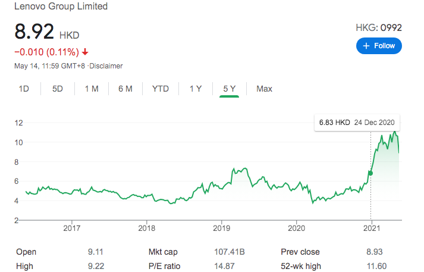
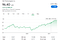
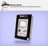

PC market stocks in pandemic time
How PC manufacturers stock price behaved in this pandemic era

Working on the data that will be the base material that will extend this article about Apple Vs Microsoft and the adoption of operating systems. These data include sales volumes of Personal computers. Thought that it is interesting for you Data-driven investor to know that due to the pandemic time with people forced to work from home, the PC market has grown in sales volume, and this level of growth never occurred since 2015.
4% growth in 2020 and certainly more in 2021. To say that PC manufacturers are part of those industries that benefited honestly from this pandemic situation and the stock price of some of them reflect it clearly like here
LENOVO

As you can see since early 2020 the stock price of Lenovo, the leader of the PC market, increased from $4 per share to $12 per share.
The sales data of the whole PC market also highlight this beneficial trend that the PC manufacturing industry saw. Here the sales volumes of PC
This growth pattern is there for almost all PC manufacturers like
DELL

HP
It may be still profitable to benefit from this pattern driven by this specific situation we are leaving now but this article is not about advising you to invest in these stocks.
Dealing with data every day and running a mail-only startup named Book Dojo that publishes data-driven books like the one below

More about the Book about Gamestop Squeeze here. more about Book Dojo Here